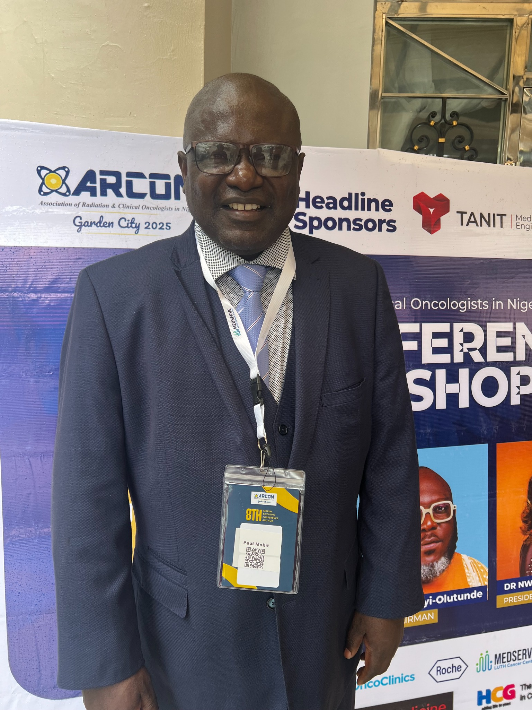

Professor Paul N. Mobit
Medical physicist, radiation oncology professional, educator, researcher and healthcare entrepreneur with more than three decades of cancer-care experience. Professor Mobit founded the Cameroon Cancer Foundation and Cameroon Oncology Center and has focused his work on expanding safe, evidence-based cancer care in Cameroon.
Physicien médical, professionnel de la radio-oncologie, enseignant, chercheur et entrepreneur de santé comptant plus de trois décennies d'expérience dans la prise en charge du cancer. Le Professeur Mobit a fondé la Cameroon Cancer Foundation et le Cameroon Oncology Center, avec pour objectif d'élargir l'accès à des soins oncologiques sûrs et fondés sur les données probantes au Cameroun.